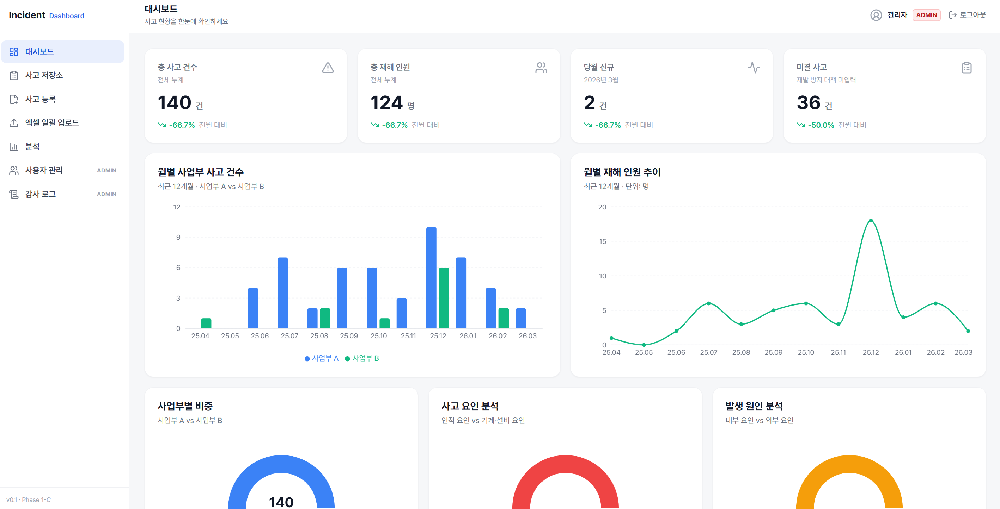
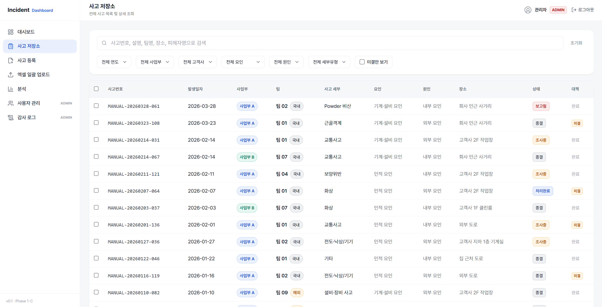

반도체 장비 제조사 DX팀에서 현장 서비스 시스템의 고도화와 운영을 담당하고 있습니다. 데이터가 만들어지는 현장의 조건을 이해하고, 시스템 간 데이터 흐름을 추적해 문제를 해결합니다.
요구사항 분석프로세스 설계화면 설계SAP 연계시스템 운영ITSM
제가 다루는 시스템의 공통 구조
01
접수
현장 이벤트와 요청을 유형 체계로 받아들이고
02
실행
배정과 조치가 현장에서 이루어지게 하고
03
기록
실적과 이력을 정확한 기준으로 남기고
04
분석
쌓인 데이터로 유형을 분석해 개선으로 잇습니다
이 사이클의 품질은 화면이 아니라, 데이터가 만들어지는 현장의 조건에서 결정됩니다. 저는 이 관점으로 시스템을 기획하고 운영합니다.
소개
현업과 개발 사이에서 요구사항을 구체화하고 프로세스를 설계하는 IT 기획자입니다. 현장 서비스 시스템 고도화, 전사 그룹웨어 도입, ITSM 체계 정립 프로젝트에서 AS-IS 분석부터 TO-BE 설계, 화면 기획, 오픈 이후 운영까지 수행했습니다.
시스템을 운영하며 배운 것은, 현장의 데이터 품질 문제는 대부분 사용자가 아니라 입력 구조와 데이터 기준에서 비롯된다는 점입니다. 문제를 화면에 보이는 증상이 아닌 데이터가 생성되고 전달되는 기준의 관점에서 추적하고, 이해관계자들이 같은 기준으로 판단할 수 있도록 구조화하는 일에 강점이 있습니다.
3+수행 프로젝트
1년+IT 기획·운영 실무
PI프로세스 통합 수행
전사시스템 도입·운영
프로젝트
Project 01 · System Enhancement
현장 서비스(SVC) 시스템 고도화
2025.03 — 현재
고객사 생산 현장에 설치된 장비의 CS 업무를 관리하는 통합 서비스 플랫폼의 고도화 프로젝트. 600명 이상의 현장 엔지니어가 사용하는 시스템에서 약 180건의 기능 요구사항을 7개 업무 영역으로 구조화했으며, AS-IS 분석부터 TO-BE 설계, 화면 기획, 현업·개발사 간 조율까지 기획 전반을 담당했습니다. 오픈 이후에는 100여 건의 VOC·이슈 대응을 통해 안정화를 수행하고 있습니다.
CASE 01 · PROCESS INTEGRATION분리 운영되던 두 프로세스를 하나로 — 시스템 PI
같은 성격의 서비스 업무가 두 개의 프로세스로 분리 접수·관리되어 중복 업무와 이력 분산이 발생했습니다. AS-IS 프로세스를 분석해 공통 단계를 식별하고, 단일 접수·분류 체계로 통합하는 TO-BE 프로세스를 설계했습니다.
두 프로세스의 공통 단계를 식별해 단일 플로우로 통합 (개념 재구성)
CASE 02 · DATA INTEGRITYSAP 연계 실적 데이터 정합성 이슈 추적
엔지니어의 작업(설치·유지보수 등)은 실적으로, 사용 자재는 자재실적으로 기록되어 SAP로 인터페이스됩니다. 시스템 전환 과정에서 DB 변경에 따라 인터페이스가 DB 직결 방식에서 REST API 방식으로 전환된 환경이며, 운영 중 연계 기준값 불일치로 실적 정합성이 어긋나는 문제가 발생했고, 화면의 증상이 아닌 데이터의 생성·전달 경로를 단계별로 추적해 원인을 구조화했습니다.
증상 → 원인 추적 프로세스 (개념 재구성)
CASE 03 · FIELD USABILITY현장 입력 환경의 재설계 — 태블릿 실적 등록
기존 시스템에는 태블릿 실적 등록·작업 리포트 기능이 없어, 엔지니어가 작업 후 사무 공간으로 나와 기억에 의존해 입력해야 했고 데이터의 시차와 누락이 반복되었습니다. 이를 사용자 개인의 문제가 아닌 입력 구조의 문제로 정의하고, 신규 시스템에 태블릿 현장 입력 기능을 요구사항으로 반영했습니다. 통신 가능한 라인에서는 작업 직후 입력이 가능해졌으며, 기기 반입이 제한되는 구역은 제약으로 남아 물리적 환경까지 포함한 설계의 중요성을 배웠습니다.
배운 것. 시스템 간 연계 이슈는 화면의 증상이 아니라 데이터가 생성되고 전달되는 기준을 추적해야 풀리고, 시스템 개선은 현장의 물리적 제약까지 포함해 설계해야 한다는 것.
FigmaJiraNotionSAP I/F (REST API)
Side Project · Full Cycle
사고 관리 대시보드 시스템
기획 → 설계 → 구현
엑셀로 관리되던 안전사고 관리 업무를 웹 기반 시스템으로 전환하는 사이드 프로젝트. 요구사항 명세서 작성부터 데이터 모델·권한 체계 설계, 단계별 구현 우선순위 수립까지 기획 전 과정을 수행하고, AI 코딩 도구를 활용해 직접 구현했습니다.
DESIGN · WORKFLOW & RBAC분류 체계와 처리 상태 워크플로우 설계
사고 데이터가 등록부터 종결까지 일관된 기준으로 관리되도록 상태 워크플로우를 정의하고, 사고 유형·요인·심각도 분류 체계와 역할 기반 권한(RBAC)을 설계했습니다.
상태 전이 규칙과 3단계 권한 구조 (실제 설계)
RESULT · WORKING SYSTEM구현 화면
React + TypeScript 프론트엔드와 Java(Spring Boot) + PostgreSQL 백엔드로 구현했습니다. 아래 화면은 목업 데이터 기반 데모이며, 실제 데이터를 포함하지 않습니다.

대시보드 — KPI · 월별 추이 · 유형 분석 (목업 데이터 기반 데모)

사고 저장소 — 검색 · 다중 필터 · 상태/대책 관리 (목업 데이터 기반 데모)
배운 것. 발주자와 구현자의 시각을 오가며, 요구사항을 개발 가능한 수준까지 구조화하는 일이 시스템의 품질을 결정한다는 것.
ReactTypeScriptSpring BootPostgreSQLDocker
Project 02 · System Introduction
전사 그룹웨어 도입 및 운영
2025.03 — 2025.10 (운영 지속)
전사 그룹웨어 도입 프로젝트에서 기능 검토부터 사내 HR 시스템과의 사용자·조직 정보 연동, 도입 후 운영 안정화까지 참여했습니다. 도입 이후에는 운영을 담당하며 사용자 요청 대응과 개선사항 반영을 수행하고 있습니다.
담당 역할
그룹웨어 기능 검토 및 도입 실무
HR 시스템 ↔ 그룹웨어 인사 정보 연동 검토·적용
사용자 매뉴얼 작성 및 현업 사용자 교육
도입 후 시스템 운영·장애 대응
핵심 성과
전사 대상 그룹웨어 안정적 도입 완료
인사 연동으로 수동 관리 업무 자동화 기반 마련
운영 체계 정립 및 사용자 응대 프로세스 구축
상용 그룹웨어HR 연동NotionJira
Project 03 · IT Service Management
ITSM 서비스 체계 정립
2025.03 — 2025.08
사내 IT 서비스 관리 체계(ITSM) 도입 프로젝트에서 서비스 목록·분류 체계 정리에 참여하고, 서비스 요청(SR)의 유형과 처리 프로세스를 정리했습니다. 비체계적으로 접수되던 IT 요청이 분류 체계 기반으로 표준화되어, 직원들이 IT 서비스를 체계적으로 요청하고 처리받는 구조를 만드는 데 기여했습니다.
담당 역할
IT 서비스 목록·분류 체계 정리 참여
서비스 요청(SR) 유형 및 처리 프로세스 정리
서비스 카탈로그 정리 및 운영 기준 문서화 지원
핵심 성과
비체계적 IT 요청을 분류 체계로 구조화
서비스 카탈로그 기반 Helpdesk 운영 기반 마련
요청 유형별 처리 흐름 표준화
상용 ITSM 솔루션NotionFigma
역량
기획 · 분석
요구사항 분석·정의서 작성
업무 프로세스 설계 (AS-IS/TO-BE)
화면 설계·와이어프레임
테스트 시나리오 작성
기술 이해
REST API 연동 구조
DB 구조 이해 · SQL 기초
SAP 인터페이스 데이터 흐름
Java(Spring Boot) 구축 경험
협업 · 운영
현업·개발사 커뮤니케이션 주도
일정 조율·이슈 트래킹
사용자 교육·매뉴얼 제작
운영 지원·장애 대응
도구
Figma (플로우차트·UI)
Jira (이슈·스프린트)
Notion (문서화·요구사항)
Slack · Office 365
교육 · 활동
2024.02 — 2024.08
구름톤 풀스택 개발 과정 수료
React, TypeScript, Spring Boot, JPA, Docker, AWS 기반 풀스택 웹 개발 (카카오 × 구름 기업연계 프로젝트 수행)